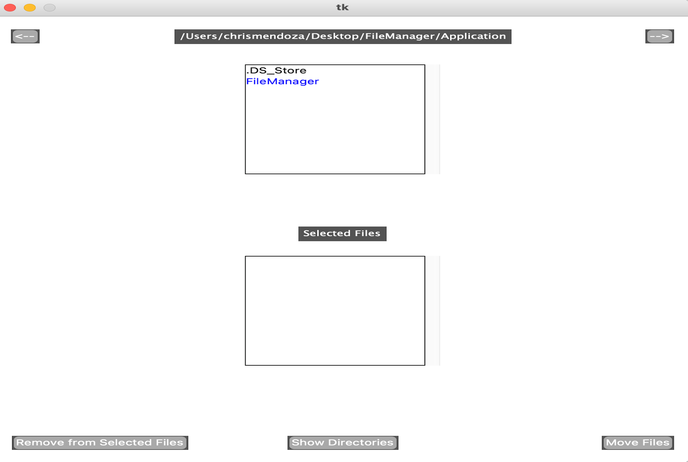
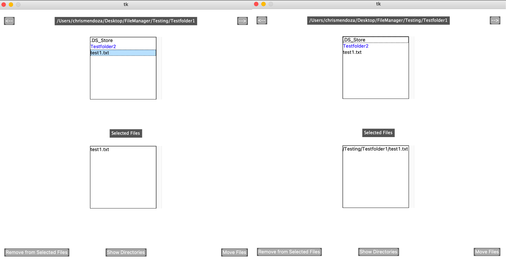
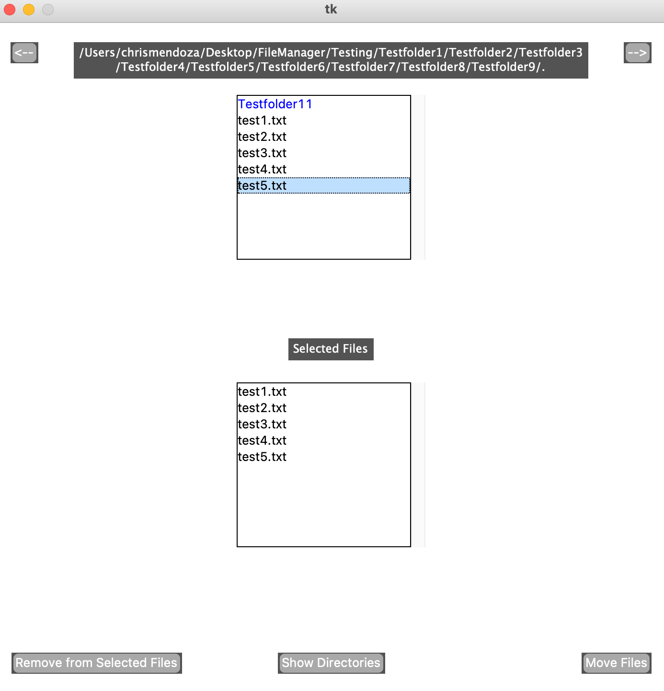

move files at ease
Inspired by the macOS finder application, I wanted to create a program that enables users to quickly relocate files within their directories. The built-in macOS finder lacked the feature of moving files to other folders quickly. For someone who moves files around often, I often was left having to open two instances of the finder application and drag files from several different folders to their respective destination. My file manager program solves this issue.
Upon running this program, the files listed in your current directory are shown. From there you can navigate through previous directories, traverse through your current directories that are shown, or begin selecting files to move around. The file manager previews your selected files below and offers two different previews: showing files or showing directories chosen. And lastly with the bottom two buttons you are able to select files to remove from the preview or move all the files to their respective chosen directory.
From this project, I got a better grasp on python’s libraries, including tkinter, ttkthemes, and os, and what it takes to create a functional graphical user interface. Although python’s tkinter lacks modern styling, I was able to learn aspects of creating a functional interface.